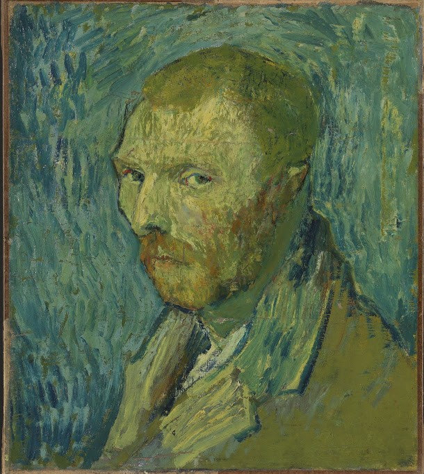

Fases
Trabalho dedicado a aparesentar algumas obras de Van Gogh, durante os de 1888, 1889 e 1890. Em apenas 10 anos, Van Gogh pintou cerca de 900 quadros, contendo princípios matemáticos complexos e (ainda) sem solução. Ele faleceu em 1890, aos 37 anos.
Van Gogh na verdade tem dois quadros chamados “Noite Estrelada”, e o primeiro, menos icônico, é chamado de “Noite Estrelada 1”. Ele pintou o primeiro em Arles à noite, e luz suficiente para pintar o que ele estava vendo, Van Gogh colocou velas em seu chapéu de palha.
Van Gogh é considerado um mestre das pinturas de naturezas-mortas e sua série sobre “girassóis” está entre as mais famosas desse tema. Essa obra quebrou o recorde de leilão de uma pintura quando foi vendida por quase US $40 milhões em março de 1987.

Há uma crença de que este quadro seja o último do pintor. Por causa do conteúdo da obra (céu ameaçador, os corvos e o caminho de um beco sem saída), alguns acreditam que eles se referem ao fim de sua vida se aproximando. A obra é uma paisagem de um vilarejo perto de Paris, chamado Auvers-sur-Oise.
Feita em Arles em 1888, esta obra é a única vendida por Van Gogh, publicamente e durante sua vida. Com esta composição, Van Gogh descreve o trabalho dos camponeses da zona rural de Arles, durante a época da colheita.Desde 1906, a obra nunca mais deixou a Rússia: está exposta no ilustre Museu Pushkin de Moscou.

Seu quadro mais famoso, A Noite Estrelada pertence ao acervo do museu Metropolitan, de Nova York. Ele foi pintado enquanto Van Gogh estava internado em um sanatório de Saint-Remy-de-Provence, na França.

Após quase 50 anos de dúvidas sobre sua autenticidade, especialistas confirmaram que o famoso autorretrato de Vincent van Gogh foi realmente pintado pelo artista holandês. A confirmação foi anunciada por Louis van Tilborgh, pesquisador do Museu Van Gogh, nesta segunda-feira (20/01/2020). A obra, foi comprada como genuína em 1910 pelo Museu Nacional da Noruega onde permanece em exposição.